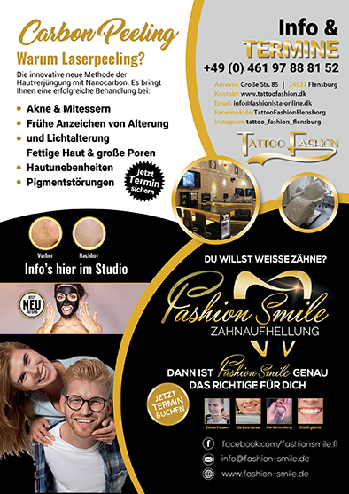

Eckernförde
INHABERWECHSEL BEI TATTOO FASHION ECKERNFÖRDE
Alle Infos zum Walk In Day und zur Aktion in Eckernförde auf einen Blick.
Jede Idee hat eine Geschichte. Entdecke die Menschen, die Kunst und die Leidenschaft hinter Tattoo Fashion.
UNSERE GESCHICHTE ↗Hier findest du aktuelle Neuigkeiten, Aktionen und Updates aus der Tattoo Fashion Welt.
Alle Infos zum Walk In Day und zur Aktion in Eckernförde auf einen Blick.

CarbonPeeling und FashionSmile – neue Beauty-Angebote jetzt bei Tattoo Fashion Flensburg.
Open Doors ab 10:00 Uhr, 50,- Euro Gutschein bei Terminbuchung und weitere Specials vor Ort.